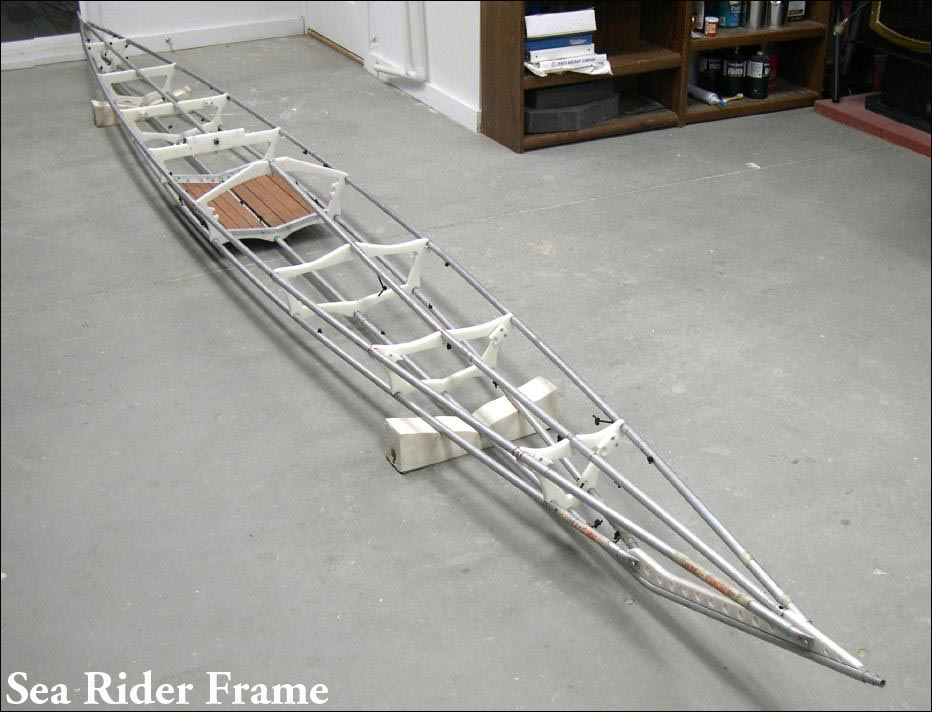

| Sea Rider Frame Changes | Menu Last Page Next Page |
|
 The assembled Sea Rider Frame before the addition of the new Masik ( Section 4) and internal bracing. This new page can be found in the Sea Rider section of the Designs Menu. Use the {BACK} key to return. |
|